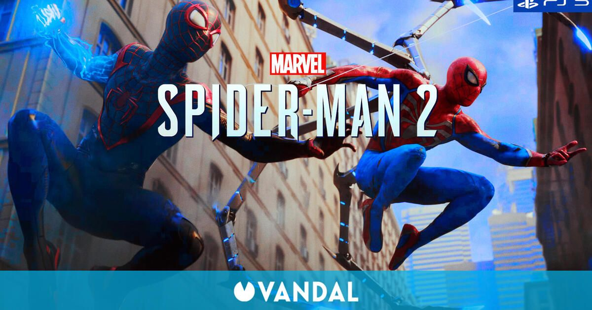

Spiderman 2
"Spider-Man 2" es un juego de acción y aventuras basado en el popular superhéroe de Marvel Comics, Spider-Man. Siguiendo la línea de los juegos anteriores de la serie, los jugadores asumen el papel de Peter Parker, quien lucha contra el crimen en la ciudad de Nueva York mientras equilibra su vida personal y su identidad secreta como Spider-Man..
Compra ahora